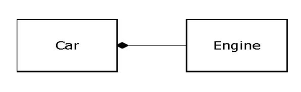

Reusing the implementation
Once a class has been created and tested, it should (ideally) represent a useful unit of code. It turns out that this reusability is not nearly so easy to achieve as many would hope; it takes experience and insight to produce a reusable object design. But once you have such a design, it begs to be reused. Code reuse is one of the greatest advantages that object-oriented programming languages provide.
The simplest way to reuse a class is to just use an object of that class directly, but you can also place an object of that class inside a new class. We call this “creating a member object.” Your new class can be made up of any number and type of other objects, in any combination that you need to achieve the functionality desired in your new class. Because you are composing a new class from existing classes, this concept is called composition (if the composition happens dynamically, it’s usually called aggregation). Composition is often referred to as a “has-a” relationship, as in “A car has an engine.”

(This UML diagram indicates composition with the filled diamond, which states there is one car. I will typically use a simpler form: just a line, without the diamond, to indicate an association. 5 )
Composition comes with a great deal of flexibility. The member objects of your new class are typically private, making them inaccessible to the client programmers who are using the class. This allows you to change those members without disturbing existing client code. You can also change the member objects at run time, to dynamically change the behavior of your program. Inheritance, which is described next, does not have this flexibility since the compiler must place compile-time restrictions on classes created with inheritance.
Because inheritance is so important in object-oriented programming, it is often highly emphasized, and the new programmer can get the idea that inheritance should be used everywhere. This can result in awkward and overly complicated designs. Instead, you should first look to composition when creating new classes, since it is simpler and more flexible. If you take this approach, your designs will be cleaner. Once you’ve had some experience, it will be reasonably obvious when you need inheritance.
5 This is usually enough detail for most diagrams, and you don’t need to get specific about whether you’re using aggregation or composition.